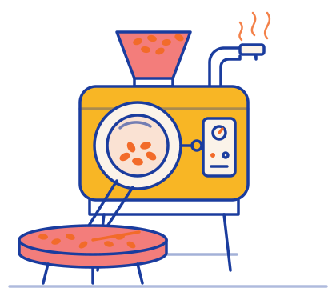

Eerlijk
Zwartwerk
Het enige zwarte is de koffie.
Een kleine branderij uit Baarn met een grote liefde voor pure koffie. Geen marketingpraat, wel goede bonen, eerlijk gebrand en met een verhaal.
Uit nieuwsgierigheid
Zwartwerk begon met een simpele vraag: waarom drinken we eigenlijk elke dag dezelfde koffie?
Wie eenmaal een kopje Ethiopische koffie heeft geproefd dat naar bosbes en jasmijn smaakt, of een Braziliaanse die doet denken aan pindakaas en chocolade, weet hoeveel er te ontdekken valt. Toch zit er in de meeste keukenkastjes al jaren hetzelfde pak.
Daar wilden we iets aan doen. We begonnen met branden in kleine hoeveelheden, proefden eindeloos en deelden de beste zakken uit aan vrienden en buren. Hun reactie was steeds dezelfde: “Wat is het volgende?”
Zo ontstond het idee voor een abonnement waarbij je elke maand iets nieuws ontdekt. Kleine oplage, groot verhaal.


Waarom ‘Zwartwerk’?
Ja, het is een knipoog. Bij ons gaat alles gewoon netjes in de boeken. Maar ‘zwart’ staat voor de koffie zoals wij hem het liefst drinken: puur, zonder poespas. En ‘werk’ voor het vakmanschap: handwerk in kleine oplage, van het selecteren van de bonen tot het invullen van het etiket.
Goede koffie, minder bla bla
Herkomst telt
We kiezen bonen waarvan we weten waar ze vandaan komen: het land, de regio en de boer of coöperatie.
Klein branden
We branden in kleine batches, afgestemd op het aantal abonnees. Zo is je koffie altijd vers en verspillen we niets.
Puur
Geen aroma’s, geen smaakjes, geen trucjes. De smaak komt van de boon, de bodem en de branding.
Zonder gedoe
Past door je brievenbus, verzending inbegrepen en maandelijks opzegbaar. Zo hoort een abonnement te zijn.

Van boon tot brievenbus
- Proeven, proeven, proeven. We proeven monsters van kleine partijen uit de koffiegordel en kiezen alleen wat ons echt verrast.
- Branden per boon. Elke boon krijgt zijn eigen brandprofiel. Een fruitige Ethiopiër branden we lichter dan een volle Braziliaan.
- Rusten en verpakken. Na het branden laten we de bonen even rusten, zodat ze op hun best bij jou aankomen. Daarna gaan ze in onze zak met aromaventiel.
- Met de hand ingevuld. Batchnummer, herkomst, branddatum en brandprofiel schrijven we per zak op het etiket.
Klein, en dat blijft zo
We branden vanuit Baarn en versturen door heel Nederland. We willen niet de grootste worden, wel de branderij waar je elke maand naar uitkijkt.
Vragen, ideeën of gewoon een koffieverhaal kwijt? Mail ons op info@zwartwerkkoffie.nl. We lezen alles zelf.
Van boon tot bijzonder verhaal.
- Adres
- De Savornin Lohmanlaan 7
3741 TW Baarn - info@zwartwerkkoffie.nl
- KvK
- 89513908
- Btw
- NL004738412B27
Kleine oplage. Groot verhaal.
Proef het zelf
Eerste levering 25% korting. Verzending inbegrepen. Maandelijks opzegbaar.
Start abonnement